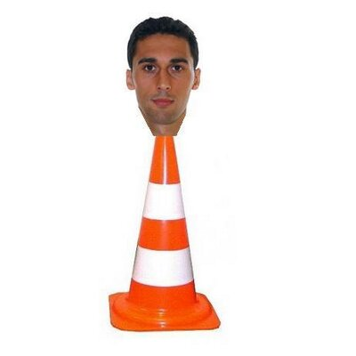
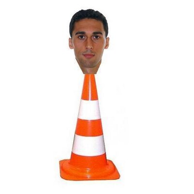

Carrera profesional como futbolista:
- Equipos:
- Selección nacional:
- Palmarés a nivel de club:
- Palmarés a nivel de selección:
 Real Madrid C. F. (2004-05)
Real Madrid C. F. (2004-05)
 R. C. D. La Coruña (2006-07)
R. C. D. La Coruña (2006-07)
 Liverpool F. C. (2007-09)
Liverpool F. C. (2007-09)
 Real Madrid C. F. (2009-16)
Real Madrid C. F. (2009-16)
 West Ham United F. C. (2016-17)
West Ham United F. C. (2016-17)
56 partidos
Debut el 26 de marzo de 2008
Liga Nacional: 1 (2011-12)
Copa del Rey: 2 (2010-11)(2013-14)
Supercopa de España: 1 (2012)
Champions: 2 (2013-14)(2015-16)
Supercopa de Europa: 1 (2014)
Mundialito de clubes: 1 (2014)
Eurocopas: 2 (2008)(2012)
 Mundial: 1 (2010)
Mundial: 1 (2010)
 
